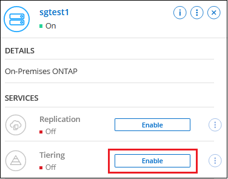

Solicitar cambios en el documento
Solicitar cambios en el documento Editar en GitHub
Editar en GitHub Guía del colaborador
Guía del colaboradorOrganización en niveles de los datos de los clústeres de ONTAP en las instalaciones a Google Cloud Storage
Colaboradores
Libere espacio en sus clústeres de ONTAP en las instalaciones organizando en niveles los datos inactivos en Google Cloud Storage.
Inicio rápido
Empiece rápidamente siguiendo estos pasos o desplácese hacia abajo hasta las secciones restantes para obtener todos los detalles.
 Prepárese para organizar los datos en niveles en Google Cloud Storage
Prepárese para organizar los datos en niveles en Google Cloud StorageNecesita lo siguiente:
-
Un clúster de ONTAP en las instalaciones que ejecuta ONTAP 9.6 o posterior y que tiene una conexión HTTPS con Google Cloud Storage. "Aprenda a detectar un clúster".
-
Una cuenta de servicio con el rol de administrador de almacenamiento predefinido y las claves de acceso al almacenamiento.
-
Un conector instalado en un VPC de Google Cloud Platform.
-
Conexión a redes para el conector que permite una conexión HTTPS de salida al clúster de ONTAP en el centro de datos, a Google Cloud Storage y al servicio Cloud Tiering.
 Configure la organización en niveles
Configure la organización en nivelesEn BlueXP, seleccione un entorno de trabajo en las instalaciones, haga clic en Activar para el servicio Tiering y siga las indicaciones para organizar los datos en niveles en Google Cloud Storage.
 Configurar la licencia
Configurar la licenciaCuando finalice su prueba gratuita, pague por Cloud Tiering mediante una suscripción de pago por uso, una licencia BYOL de Cloud Tiering de ONTAP o una combinación de ambos:
-
Para suscribirse desde el mercado de GCP, "Vaya a la oferta de BlueXP Marketplace", Haga clic en Suscribirse y, a continuación, siga las indicaciones.
-
Para pagar con una licencia BYOL de Cloud Tiering, contactarnos si necesita adquirirla, y luego "Agréguela a su cuenta desde la cartera digital BlueXP".
Requisitos
Verifique la compatibilidad con su clúster de ONTAP, configure las redes y prepare el almacenamiento de objetos.
La siguiente imagen muestra cada componente y las conexiones que necesita preparar entre ellos:


|
La comunicación entre el conector y Google Cloud Storage se utiliza únicamente para la configuración del almacenamiento de objetos. |
Preparar los clústeres de ONTAP
Sus clústeres de ONTAP deben cumplir los siguientes requisitos cuando organizando los datos en niveles en Google Cloud Storage.
- Plataformas ONTAP compatibles
-
-
Al usar ONTAP 9.8 y versiones posteriores: Puede organizar los datos en niveles desde sistemas AFF, o sistemas FAS con agregados íntegramente de SSD o agregados íntegramente de HDD.
-
Al usar ONTAP 9.7 y versiones anteriores: Puede organizar en niveles datos de sistemas AFF o sistemas FAS con agregados compuestos en su totalidad por SSD.
-
- Versiones de ONTAP compatibles
-
ONTAP 9.6 o posterior
- Parámetro de acceso a aplicaciones necesario
-
El usuario administrador del clúster debe tener acceso a “Console” Application. Puede verificarlo con el comando ONTAP
security login show. "Console" debe aparecer en la columna Application para el usuario "admin". Utilice lasecurity login createcomando para agregar acceso a la aplicación de consola si es necesario. "Consulte los comandos de inicio de sesión de seguridad para obtener más información". - Requisitos para la red de clúster
-
-
El clúster de ONTAP inicia una conexión HTTPS a través del puerto 443 a Google Cloud Storage.
ONTAP lee y escribe datos en y desde el almacenamiento de objetos. El almacenamiento de objetos nunca se inicia, solo responde.
A pesar de que Google Cloud Interconnect ofrece un mejor rendimiento y menores cargas de transferencia de datos, no es necesario entre el clúster ONTAP y Google Cloud Storage. Pero hacerlo es la mejor práctica recomendada.
-
Se requiere una conexión entrante del conector, que reside en un VPC de Google Cloud Platform.
No se necesita una conexión entre el clúster y el servicio Cloud Tiering.
-
Se requiere una LIF de interconexión de clústeres en cada nodo ONTAP en el que se alojan los volúmenes que se desean organizar. La LIF debe estar asociada al IPspace que ONTAP debería utilizar para conectarse al almacenamiento de objetos.
Cuando configura la organización en niveles de datos, Cloud Tiering le solicita que utilice el espacio IP. Debe elegir el espacio IP al que está asociada cada LIF. Puede ser el espacio IP «predeterminado» o un espacio IP personalizado que haya creado. Más información acerca de "LIF" y.. "Espacios IP".
-
- Volúmenes y agregados compatibles
-
El número total de volúmenes que puede organizar en niveles en Cloud puede ser menor que el número de volúmenes en su sistema ONTAP. Esto se debe a que los volúmenes no pueden estar organizados en niveles desde algunos agregados. Consulte la documentación de ONTAP para "Funcionalidad o funciones no compatibles con FabricPool".
|
|
Cloud Tiering admite FlexGroup Volumes. El programa de instalación funciona igual que cualquier otro volumen. |
Detectar un clúster de ONTAP
Necesita crear un entorno de trabajo de ONTAP en las instalaciones en BlueXP para poder empezar a organizar en niveles los datos inactivos.
Creación o conmutación de conectores
Se requiere un conector para organizar los datos en niveles en el cloud. Al organizar los datos en niveles en Google Cloud Storage, debe haber un conector disponible en un VPC de Google Cloud Platform. Tendrá que crear un conector nuevo o asegurarse de que el conector seleccionado actualmente reside en GCP.
Preparación de la conexión a redes para el conector
Asegúrese de que el conector tiene las conexiones de red necesarias.
-
Asegúrese de que el VPC donde está instalado el conector habilita las siguientes conexiones:
-
Una conexión de Internet saliente al servicio Cloud Tiering Puerto 443 (HTTPS)
-
Una conexión HTTPS a través del puerto 443 a Google Cloud Storage
-
Una conexión HTTPS a través del puerto 443 para la LIF de gestión del clúster ONTAP
-
-
Opcional: Habilite Google Access privado en la subred en la que planea implementar el conector.
"Acceso privado a Google" Es recomendable si tiene una conexión directa de su clúster de ONTAP al VPC y desea que la comunicación entre el conector y Google Cloud Storage permanezca en su red privada virtual. Tenga en cuenta que Private Google Access funciona con instancias de VM que sólo tienen direcciones IP internas (privadas) (sin direcciones IP externas).
Preparación de Google Cloud Storage
Cuando se configura una organización en niveles, debe proporcionar claves de acceso al almacenamiento para una cuenta de servicio con permisos de administrador de almacenamiento. Una cuenta de servicio permite que Cloud Tiering autentique y acceda a los bloques de almacenamiento en cloud que se utilizan para la organización en niveles de los datos. Las claves son necesarias para que Google Cloud Storage sepa quién está haciendo la solicitud.
Los cubos de almacenamiento en el cloud deben estar en una "Región que admite Cloud Tiering".
|
|
Si tiene pensado configurar Cloud Tiering para utilizar clases de almacenamiento de menor coste en las que sus datos organizados en niveles se moverán al cabo de un determinado número de días, no debe seleccionar ninguna regla de ciclo de vida al configurar el bloque en su cuenta de GCP. La organización en niveles del cloud gestiona las transiciones del ciclo de vida. |
-
"Cree una cuenta de servicio con el Administrador de almacenamiento predefinido función".
-
Vaya a. "Configuración de almacenamiento para GCP" y crear claves de acceso para la cuenta de servicio:
-
Seleccione un proyecto y haga clic en interoperabilidad. Si aún no lo ha hecho, haga clic en Activar acceso de interoperabilidad.
-
En claves de acceso para cuentas de servicio, haga clic en Crear una clave para una cuenta de servicio, seleccione la cuenta de servicio que acaba de crear y haga clic en Crear clave.
Deberá introducir las claves más tarde cuando configure Cloud Tiering.
-
Organización en niveles de los datos inactivos del primer clúster en Google Cloud Reducida
Después de preparar su entorno de Google Cloud, comience a organizar en niveles los datos inactivos del primer clúster.
-
Claves de acceso al almacenamiento de una cuenta de servicio con el rol Storage Admin.
-
Seleccione el entorno de trabajo de ONTAP en las instalaciones.
-
Haga clic en Activar para el servicio Tiering desde el panel derecho.
Si el destino de organización en niveles de Google Cloud Storage existe como entorno de trabajo en el lienzo, puede arrastrar el clúster al entorno de trabajo de Google Cloud Storage para iniciar el asistente de configuración.

-
Definir nombre de almacenamiento de objetos: Escriba un nombre para este almacenamiento de objetos. Debe ser único de cualquier otro almacenamiento de objetos que pueda usar con agregados en este clúster.
-
Select Provider: Seleccione Google Cloud y haga clic en continuar.
-
Siga estos pasos en las páginas Crear almacenamiento de objetos:
-
Bucket: Agregue un nuevo cubo de Google Cloud Storage o seleccione un bloque existente.
-
Ciclo de vida de clase de almacenamiento: La organización en niveles en la nube gestiona las transiciones del ciclo de vida de sus datos organizados por niveles. Los datos se inician en la clase Standard, pero puede crear reglas para mover los datos a otras clases después de un determinado número de días.
Seleccione la clase de almacenamiento de Google Cloud a la que desea transferir los datos organizados por niveles y el número de días antes de que se muevan los datos, y haga clic en continuar. Por ejemplo, la siguiente captura de pantalla muestra que los datos organizados por niveles se mueven de la clase Standard a la clase Nearline después de 30 días en el almacenamiento de objetos y, a continuación, a la clase Coldline después de 60 días en el almacenamiento de objetos.
Si elige mantener datos en esta clase de almacenamiento, los datos permanecerán en esa clase de almacenamiento. "Consulte las clases de almacenamiento compatibles".

Tenga en cuenta que la regla de ciclo de vida se aplica a todos los objetos del cucharón seleccionado.
-
Credentials: Introduzca la clave de acceso al almacenamiento y la clave secreta para una cuenta de servicio que tenga el rol Storage Admin.
-
Red de clúster: Seleccione el espacio IP que ONTAP debe utilizar para conectarse al almacenamiento de objetos.
Al seleccionar el espacio IP correcto, se garantiza que Cloud Tiering pueda configurar una conexión entre ONTAP y el almacenamiento de objetos de su proveedor de cloud.
-
-
Haga clic en continuar para seleccionar los volúmenes que desea organizar en niveles.
-
En la página Tier Volumes, seleccione los volúmenes para los que desea configurar la organización en niveles e inicie la página Tiering Policy:
-
Para seleccionar todos los volúmenes, active la casilla de la fila de título (
 ) Y haga clic en Configurar volúmenes.
) Y haga clic en Configurar volúmenes. -
Para seleccionar varios volúmenes, active la casilla de cada volumen (
 ) Y haga clic en Configurar volúmenes.
) Y haga clic en Configurar volúmenes. -
Para seleccionar un único volumen, haga clic en la fila (o.
 ) para el volumen.
) para el volumen.
-
-
En el cuadro de diálogo Tiering Policy, seleccione una política de organización en niveles, ajuste opcionalmente los días de refrigeración de los volúmenes seleccionados y haga clic en aplicar.

Ha configurado correctamente la organización en niveles de datos de los volúmenes del clúster en el almacenamiento de objetos Google Cloud.
Puede revisar información acerca de los datos activos e inactivos en el clúster. "Más información sobre la gestión de la configuración de organización en niveles".
También puede crear más almacenamiento de objetos en casos en los que puede que desee organizar los datos en niveles de ciertos agregados en un clúster en almacenes de objetos diferentes. O si tiene pensado utilizar la función FabricPool Mirroring en la que los datos organizados por niveles se replican en un almacén de objetos adicional. "Obtenga más información sobre la gestión de almacenes de objetos".